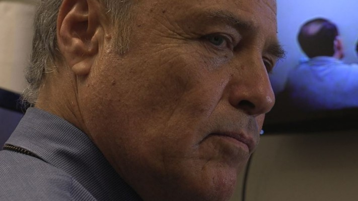

#6618 Nora Roberts - Ein Haus zum Träumen
Alternativ: Tribute

 IMDB-Wertung: 5.7 / 10
IMDB-Wertung: 5.7 / 10  Metascore: 0
Metascore: 0 
Virginia small town local Ford Sawyer, a comics artist, takes an instant liking to his new neighbor, Cilla McGowan, a former child TV starlet who moves from L.A. to renovate her Hollywood celebrity grandmother Janet's rural last residence and start a career after passing the local contractors exam. Grumpy old neighbor Carl Hennessy is suspected of the vandalism on her garden, garage and home, even knocking friendly ex Steve Chensky. Seeking comfort and security, Cilla comes to depend on Ford, who elected her as model for his next hammer-swinging Celtic comic heroin, and they fall in love. Janet's stuff yields intriguing information which proves relevant for the present aggression, with unexpected ramifications.
Jahr: 2009
Dauer: 87 Minuten
FSK:
Land: USA Studio: Lifetime TelevisionTonspuren:
Untertitel:
Auflösung: 720p (1280x720) Größe: 3952 MB
Genre: Drama, Liebe, Mystery
Regisseur:  Martha Coolidge
Martha Coolidge
Drehbuch: Gary Tieche
Soundtrack:
Darsteller:
 Brittany Murphy als Cilla McGowan
Brittany Murphy als Cilla McGowan Jason Lewis als Ford Sawyer
Jason Lewis als Ford Sawyer Christian Oliver als Steve Chensky
Christian Oliver als Steve Chensky- Diana Scarwid als Cathy Morrow
- Tippi Hedren als Mrs. Hennessey
 Tiffany Morgan als Janet Hardy
Tiffany Morgan als Janet Hardy Griff Furst als Brian Morrow
Griff Furst als Brian Morrow- Mark Wilson als Det. Alvin Wilson
-  Elliott Grey als Tom Morrow
 Jerry Leggio als Ice cream parlor owner
Jerry Leggio als Ice cream parlor owner- Blake Nelson Boyd als 1970's Party Piano Player , uncredited
- Scheryl W Brown als 70s Party Guest , uncredited
 Edward R. Cox als 70's Party Guest , uncredited
Edward R. Cox als 70's Party Guest , uncredited- Hunter McGregor als Construction Worker , uncredited
 Jay Oliver als Rest Home Resident , uncredited
Jay Oliver als Rest Home Resident , uncredited- Lisa Mackel Smith als Janet's Guest , uncredited
- Cherie Thibodeaux als Party Girl , uncredited
 Wallace Merck als Carl Hennessy
Wallace Merck als Carl Hennessy- Brandi Gerard als Shana
- Earl Maddox als Buddy
- Jesse Moore als Dobby
- John Wilmot als Dr. Rice
- Logan Douglas Smith als Government Test Proctor
 Geraldine Glenn als Customer at Ice Cream Parlor / Pedestrian , uncredited
Geraldine Glenn als Customer at Ice Cream Parlor / Pedestrian , uncredited- Elton LeBlanc als County Sheriff , uncredited
- C. Stuart Rome als CSI Agent , uncredited
- Katherine Rose als 70's Party Guest , uncredited
- Chaz Smith als 70's Party Guest , uncredited
- Terry Lee Smith als Deputy Sheriff , uncredited
- Karen Tep als Nurse , uncredited
- Elizabeth Tranchant als Young Cathy , uncredited
Datei: X:\Person\Nora Roberts\Nora Roberts - Ein Haus zum Träumen (2009, FSK, 1280x720).mkv seit 25.07.2017
Festplatte: HD Collection-7+mehr(A-Z)+Person
 Es gibt insgesamt 11 Filme in der Gruppe 'Person\Nora Roberts'
Es gibt insgesamt 11 Filme in der Gruppe 'Person\Nora Roberts'